Home / Artists / Alexei Butirskiy
Alexei Butirskiy
Atmospheric cityscapes
Born in Moscow in 1974 Alexei Butirskiy entered Moscow Art College in 1992. In 1996 he finished his studies at the Art College and graduated with an Excellence Diploma. In 1998 he completed the Russian Academy of the Arts where he studied under respected professor L. S. Hasyanova. Since 1996, Butirskiy has participated in over 10 exhibitions, one-man shows and auctions both in Russia and in England and over 25 shows in the United States. Most recently, Alexei has concentrated his efforts primarily on representing urban life around him in truthful and unglorified terms.
Upcoming Events

Catalogue
100 works. Select a piece to view it larger. Contact a gallery for availability and pricing.
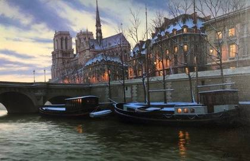
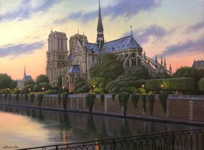
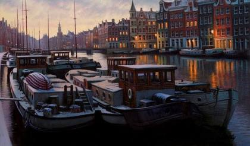
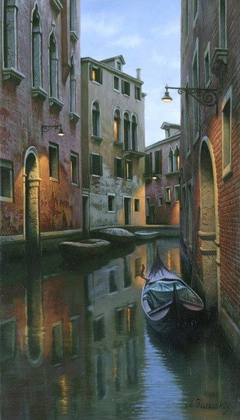
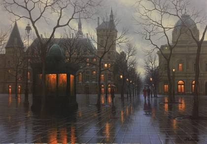
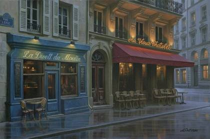
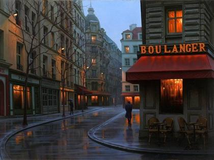
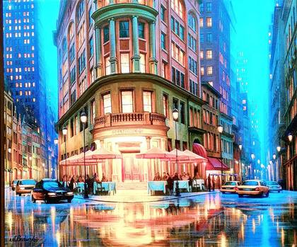
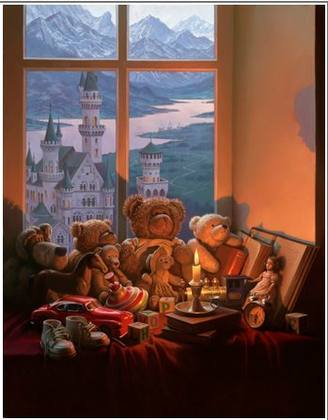
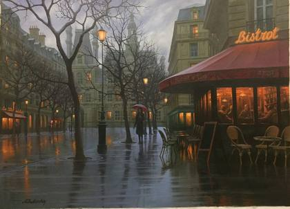
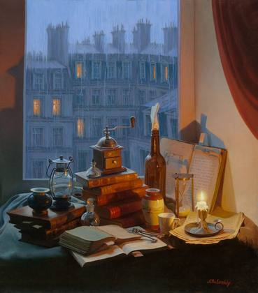
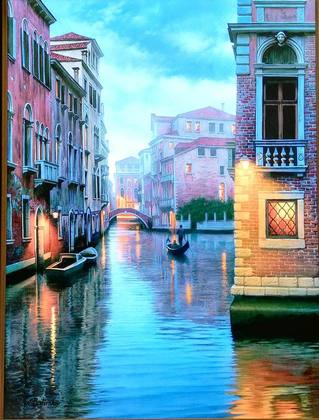
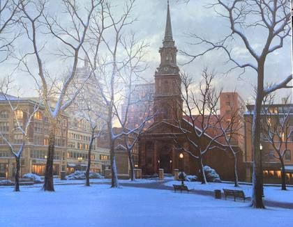
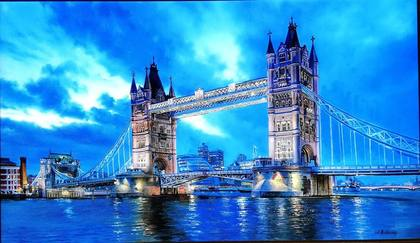
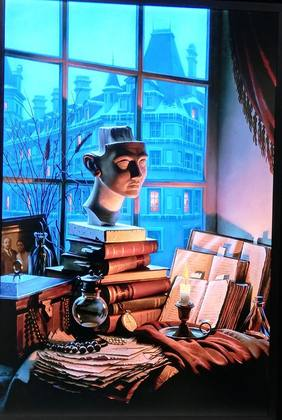
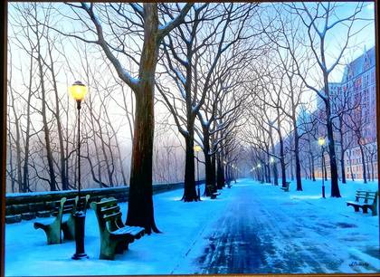
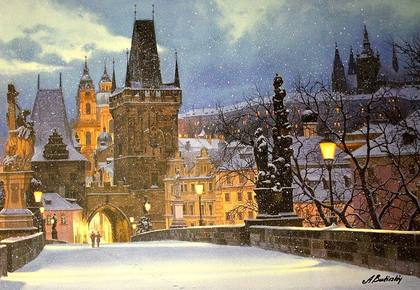
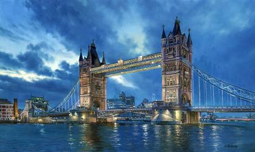
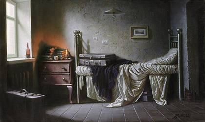
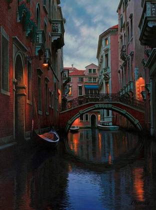
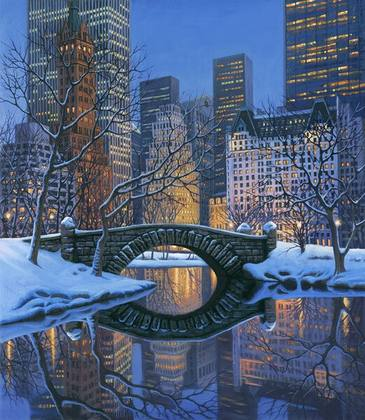
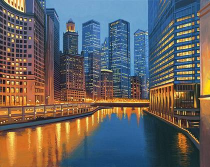
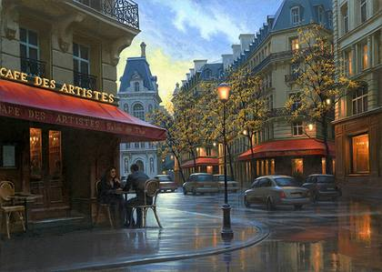
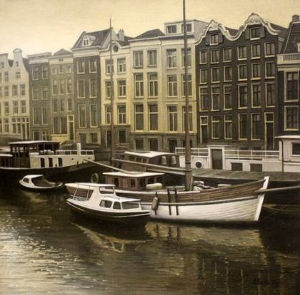
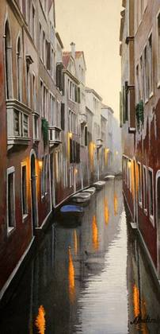
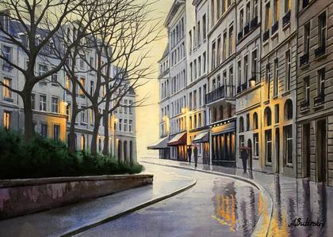
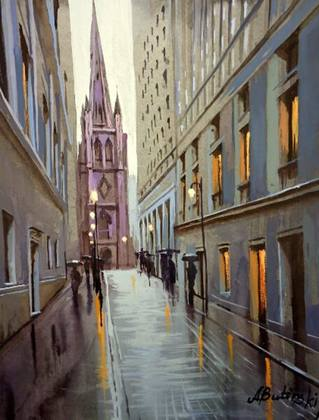
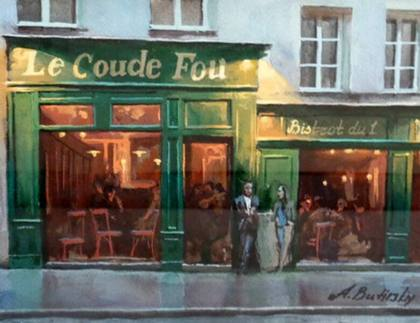
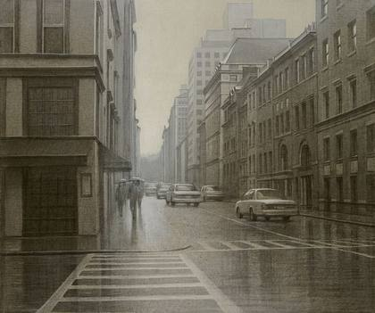
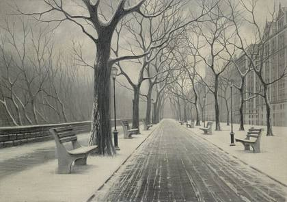
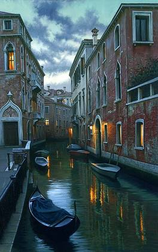
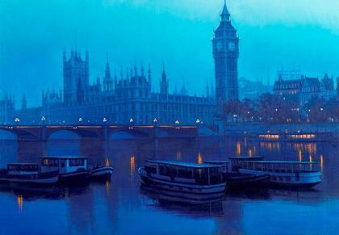
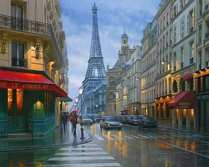
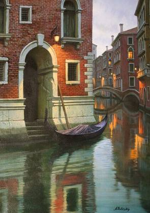
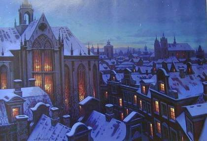
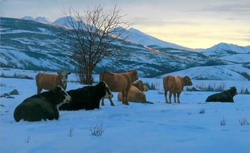
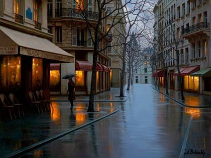
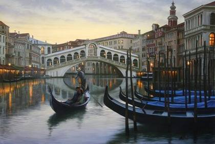
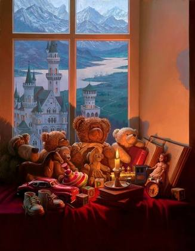
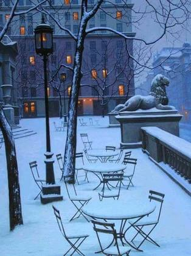
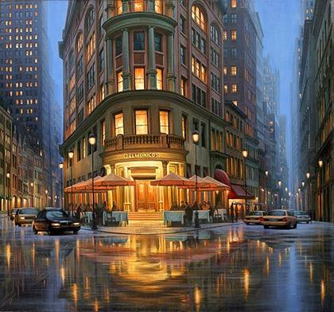
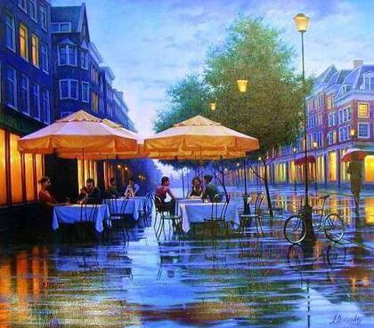
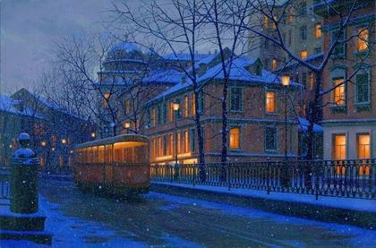
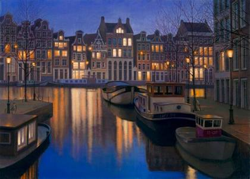
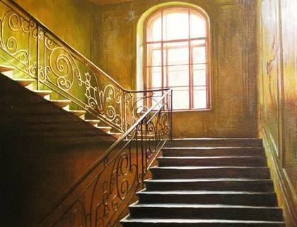
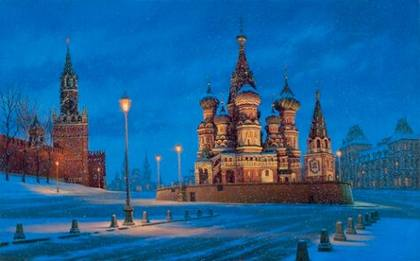
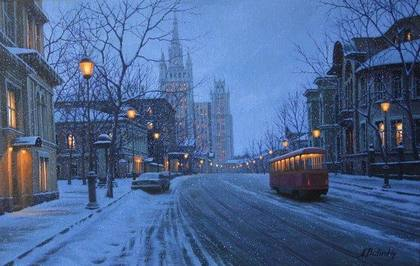
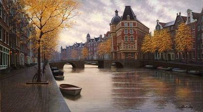
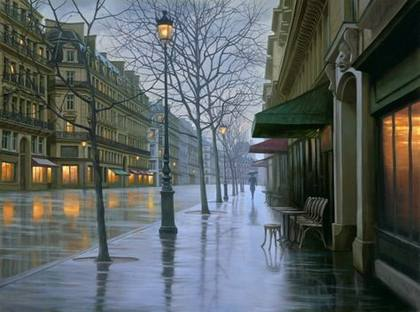
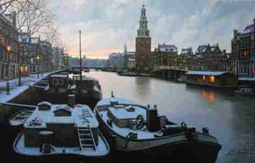